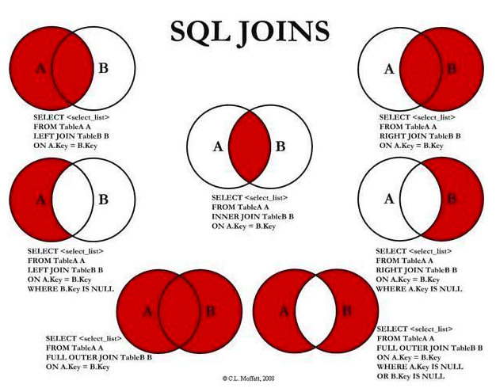
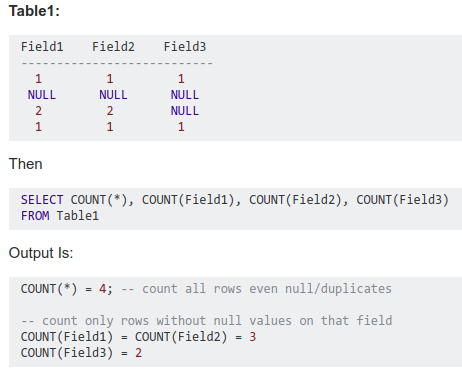

select * from table1 a inner join table2 b on a.id=b.id;
注意mysql语句的执行顺序，正确的使用别名。
shell参数
-u 用户名-p 密码-h 主机-P 端口号-s 静默模式，省略很多输出。比如select时输出的列名等。-A 省略输出列名。数据库名 在语句最后跟上数据库名会直接进入该数据库。-A 与--auto-rehash相反，emmmm,看不太懂，大概意思应该是auto-rehash 会变慢，但是可以自动补全，默认也是这种模式。--default-character-set=utf8 mysql客户端默认使用latin1编码，系统使用其他编码时会出现乱码等问题。使用这个选项可以强制指定编码解决问题。
--auto-rehash：
1 | Enable automatic rehashing. This option is on by default, which enables database, |
参看：https://www.computerhope.com/unix/mysql.htm
修改表结构
alter table table_name1 rename to table_name2 把表名由表1改为表2alter table table_name1 modify column field1 field1_type 修改字段长度/字段类型alter table table_name1 change old_field new_field field_type 修改字段名字，必须跟上字段类型alter table table_name1 add column new_field field_type 新增字段
增删改查
update table_name set field1='value1', field2='value2' [where ...]修改多个字段值
多个表关联update
UPDATE items,month SET items.price=month.price WHERE items.id=month.id;
布尔类型
首先mysql是不支持布尔类型的，当把一个数据设置成布尔类型的时候,数据库会自动转换成tinyint(1)的数据类型,其实这个就是变相的布尔。
默认值也就是1,0两种,分别对应了布尔类型的true和false
create table xxx as select…
创建xxx表，并把select查询的内容直接作为信息插入到xxx表中。注意的是select的字段要记得起别名，否则新建表会自动起一些奇怪的名字。另外注意，select不要用括号括起来，否则会报错。
case when then … else … end
条件语法，常用于select时,如：
1 | CASE WHEN gender='1' THEN '男' |
sql join
join=inner join;
left join、right join、full join属于outer join，即等于可以left/right/full [outer] join
CROSS JOIN 把表A和表B的数据进行一个N*M的组合，即笛卡尔积

（ inner）join on
输出两张表中的列。
select * from table1 inner join table2 on 条件
table1 left join table2 on 条件
左表的数据会全部输出来，没有对应数据的补null。（如上面的语句，“全部”体现在id上，即on之后的比较，本来1中是只有在两个id相等时才会select。但是如果是本例中会把左边表的id相关数据全部输出，如左表有id=3右表没有，但是还是会把左表等于3的那列的select数据输出来，右表没有相关数据只能补null）
…right join ….on….
右表的数据会全部输出来，没有的补null。
https://www.cnblogs.com/dinglinyong/p/6656315.html
UNION / UNION ALL
用于合并两个或多个 SELECT 语句的结果集。
UNION 内部的 SELECT 语句必须拥有相同数量的列。列也必须拥有相似的数据类型。每条 SELECT 语句中的列的顺序必须相同。
UNION 操作符选取不同的值。如果允许重复的值，请使用 UNION ALL。
UNION 结果集中的列名总是等于 UNION 中第一个 SELECT 语句中的列名。
优化建议：能使用union all，就不要使用union。因为union还要对数据进行排序后筛除重复的。比较费时。
FULL
full join 返回左右表所有的行，即使只有表没有相互匹配。
不过mysql对full join不支持，可以用join+union的方式来代替。
MySQL Full Join的实现 因为MySQL不支持FULL JOIN,下面是替代方法
left join + union(可去除重复数据)+ right join
1 | select * from A left join B on A.id = B.id (where 条件） |
in/exit
以优化角度考虑，一般以小表驱动大表。in语句是先执行子语句，exit是后执行子语句；
因此，如果子语句是小表就用in，是大表就用exit；
in语法：select * from 表A where id in (select id from 表B)
exit语法：select * from 表A where exists(select * from 表B where 表B.id=表A.id)
导入导出数据
linux命令mysql 的参数-e可以后面可以直接跟mysql语句。
使用-e在终端执行使在导入/出命令前加上“set character_set_database=utf8;” 可以有效避免中文乱码。
导入数据：load data local infile '' [replace] into table table_name 如果有replace，会根据主键/唯一索引查询后覆盖插入。
1 | LOAD DATA LOCAL INFILE '/home/mysql/tableExport.txt' INTO TABLE `atp_event`( |
如果指定local关键词，则表明从客户主机读文件。如果local没指定，文件必须位于服务器上。使用load data local infile而不是load data infile
导入数据出错参考：[ERROR 1290 (HY000): The MySQL server is running with the –secure-file-priv option so it cannot execute this statement](/2018/04/19/ERROR 1 HY000 Can’t create or write to file ‘user.txt’ Errcode 13 - Permission denied)
导入中文乱码时参考：[导入数据乱码](/2018/04/19/ERROR 1290 HY000 The MySQL server is running with the –secure-file-priv option so it cannot execute this statement)
【注：hive中是load data local inpath '' [overwrite] into table table_name】
导出数据：
1 | select * into outfile '/home/chenliclchen/mysql/t.txt' fields terminated by ',' from atp_event; |
导入表结构、表数据
mysqldump -u用戶名 -p密码 [-d] 数据库名 [表名] > 脚本名 有-d 时只导出结构不导数据；指定表名时只导出该表的数据和结构
coalesce(…, ….)
返回第一个不为null的值
count(null) 是0
如图，来源于网络的例子

group by
group by 一般和聚合函数一起使用才有意义,比如 count sum avg等,使用group by的两个要素:
(1) 出现在select后面的字段 要么是是聚合函数中的,要么就是group by 中的.
(2) 要筛选结果 可以先使用where 再用group by 或者先用group by 再用having
DECIMAL
DECIMAL(P,D)表示列可以存储D位小数的P位数。
没有指定括号里的精度时，导入的小数会被截断。
在hive里曾遇到这样的问题，创建的外部表没有指定精度，外部表指定的内部表有指定精度，从外部表查数据时仍然截断了小数部分。
limit分页
LIMIT [offset,] rows
offset指定要返回的第一行的偏移量,rows第二个指定返回行的最大数目。初始行的偏移量是0(不是1)。select * from table_name limit 10,5 查询第11到第15条数据
limit优化
数据库数据很多的时候会发现分页查询会越来越慢，使用一个id控制就会变快很多（但其实思考到，加入表里数据并不规整有删除的情况，可能会无法使用）。
如，select id,name from product limit 866613, 20。——》 select id,name from product where id> 866612 limit 20；
like
(1)% ：0个或多个；*一个或多个；_ ? 一个字符。
(2)只在首或尾% 和 * 两者都可以使用；如果在头尾同时使用的话,就必须要使用%。
索引类型
唯一索引：很多情况下，目的不是为了提高访问速度，而只是为了避免数据出现重复。唯一索引可以有多个，但索引列的值必须唯一，索引列的值允许有空值。
如果能确定某个数据列将只包含彼此各不相同的值，在为这个数据列创建索引的时候就应该使用关键字UNIQUE，把它定义为一个唯一索引。
如果能确定某个数据列将只包含彼此各不相同的值，在为这个数据列创建索引的时候就应该用关键字UNIQUE把它定义为一个唯一索引。这么做的好处：一是简化了MySQL对这个索引的管理工作，这个索引也因此而变得更有效率；二是MySQL会在有新记录插入数据表时，自动检查新记录的这个字段的值是否已经在某个记录的这个字段里出现过了；如果是，MySQL将拒绝插入那条新记录。也就是说，唯一索引可以保证数据记录的唯一性。事实上，在许多场合，人们创建唯一索引的目的往往不是为了提高访问速度，而只是为了避免数据出现重复。
（1）创建唯一索可以使用关键字UNIQUE随表一同创建：
1 | CREATE TABLE `wb_blog` ( |
为’catid’字段创建名为catename的唯一索引
（2）直接创建CREATE UNIQUE INDEX catename ON wb_blog(catid);
参考：https://www.cnblogs.com/interdrp/p/8031087.html
replace into
replace into t(id, update_time) values(1, now())或者replace into t(id, update_time) select 1, now()
replace into 跟 insert 功能类似，不同点在于：replace into 首先尝试插入数据到表中， 1. 如果发现表中已经有此行数据（根据主键或者唯一索引判断）则先删除此行数据，然后插入新的数据。 2. 否则，直接插入新数据。
要注意的是：插入数据的表必须有主键或者是唯一索引！否则的话，replace into 会直接插入数据，这将导致表中出现重复的数据。
MySQL replace into 有三种形式：
replace into tbl_name(col_name, ...) values(...)replace into tbl_name(col_name, ...) select ...replace into tbl_name set col_name=value, ...
第一种形式类似于insert into的用法，
第二种replace select的用法也类似于insert select，这种用法并不一定要求列名匹配，事实上，MYSQL甚至不关心select返回的列名，它需要的是列的位置。例如，replace into tb1( name, title, mood) select rname, rtitle, rmood from tb2; 这个例子使用replace into从 tb2中将所有数据导入tb1中。
第三种replace set用法类似于update set用法，使用一个例如“SET col_name = col_name + 1”的赋值，则对位于右侧的列名称的引用会被作为DEFAULT(col_name)处理。因此，该赋值相当于SET col_name = DEFAULT(col_name) + 1。
前两种形式用的多些。其中 “into” 关键字可以省略，不过最好加上 “into”，这样意思更加直观。另外，对于那些没有给予值的列，MySQL 将自动为这些列赋上默认值。
参考：https://blog.csdn.net/zmzwll1314/article/details/51550028
CAST/CONVERT
转换数据类型
1 | CAST(value as type); |
就是CAST(xxx AS 类型), CONVERT(xxx,类型)。
可以转换的类型是有限制的。这个类型可以是以下值其中的一个：
二进制，同带binary前缀的效果 : BINARY
字符型，可带参数 : CHAR
日期 : DATE
时间: TIME
日期时间型 : DATETIME
浮点数 : DECIMAL
整数 : SIGNED
无符号整数 : UNSIGNED
日期
DATE_FORMAT(date,format)
date 参数是合法的日期。format 规定日期/时间的输出格式。
DATE_SUB(date,INTERVAL expr type)
DATE_ADD(date,INTERVAL expr type)
date 参数是合法的日期表达式。expr 参数是您希望添加的时间间隔。type 是MINUTE/HOUR/DAY/WEEK 等。
DATEDIFF(date1,date2)
date1 和 date2 参数是合法的日期或日期/时间表达式。 返回两个日期之间的天数。
NOW(),CURDATE(),CURTIME()
当前日期+时间，日期，时间
format(number, length)
number是浮点数。length约束浮点数小数位数。
round(x[, d])
x指要处理的数，d是指保留几位小数。用于数据的四舍五入。d默认为0。d可以是负数，这时是指定小数点左边的d位整数位为0,同时小数位均为0。
LEFT(str,len)/RIGHT(str,len)
LEFT(str,len)
返回字符串str的最左面len个字符。RIGHT(str,len)
返回字符串str的最右面len个字符。
length(str)
返回字符串的长度。
substr(string, start, length)
从start开始截取string字符串，截取长度length。
从第一个开始截取start是1.
grant
show grants for username 查看mysql用户权限
group_concat
group_concat([DISTINCT] 要连接的字段 [Order BY 排序字段 ASC/DESC] [Separator '分隔符'] ) 分割字符默认是逗号
有把一列数据变成一行的功效。 把要连接的字段 这个字段的 所有值由一列变成一行；可按照 排序字段 排序；分隔符是变成一行时的连接符。
ERROR 1690
Mysql ERROR 1690 (22003): BIGINT UNSIGNED value is out of range in..
因为字段类型为unsigned,所以当相减结果为负值时会报错.
解决：使用cast()修改字段类型为signed